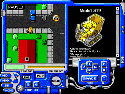

Prepare to explore the widths and depths of a city full of homicidal robots.
 This is what the game looks like. If you think it seems incomprehensible or even just a tiny bit complicated, I suggest you drop by the instructions page first.
If that happens to capture your interest, why not also read the story while you are at it?
When you feel ready, open up a game window by clicking
here, or on the picture.
Important: Some newer versions of Netscape and Internet Explorer contain a bug that messes up the graphics of the game when the background is scrolling. If you experience that problem, you can try this modified game which has a different scrolling algorithm. It takes slightly more processor power, but if you have a fast machine that shouldn't matter.